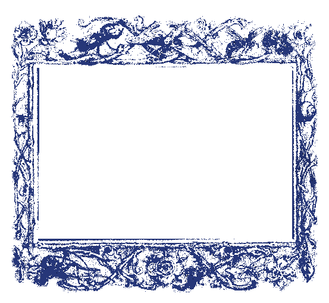

AA
Cavalluccio Marino
Durante un’immersione nelle barriere coralline d’Egitto scorsi una creatura di singolare grazia, le cui forme sinuose parevano tracciate da mano divina. Le sue curve mi richiamarono l’eleganza d’una lettera A da me abbozzata in suo onore. Solo più tardi appresi ch’essa era un cavalluccio marino, portatore della poesia degli abissi.
B
Orso
Durante un pomeriggio silenzioso nel cuore del bosco, fui colpito dalla presenza massiccia di un orso che si muoveva lento tra gli alberi. Ogni suo passo era carico di forza e consapevolezza, come se il terreno stesso si adattasse al suo passaggio. Il suo corpo imponente trasmetteva potenza, ma il suo sguardo rivelava calma e controllo. Simbolo di protezione, introspezione e forza interiore, l’orso incarna l’equilibrio tra potenza e quiete, ricordando che la vera forza risiede nella padronanza di sé
C
Lumaca
Durante uno dei miei soggiorni in Scozia, mentre mi dedicavo al giardinaggio, il caso volle che mi imbattessi in una conchiglia d’aspetto singolare. Sul suo guscio si avvolgeva una spirale così perfetta e curiosa da indurmi a riprodurla in una lettera C, quasi a conservarne la memoria. Solo in seguito appresi che tale fragile reliquia apparteneva a una lumaca.
D
Il Volo
Durante una delle mie passeggiate mattutine nei campi aperti, fui colta dalla vista di un uccello che si librava in volo, le ali spiegate in un arco perfetto contro il cielo azzurro. La curva della sua traiettoria mi richiamò alla mente la forma di una lettera D, che tentai di abbozzare sul mio taccuino per fissare quell’impressione di leggerezza e armonia.
E
Farfalla
Durante una delle mie passeggiate in un prato fiorito, fui colta dalla delicata leggerezza di una farfalla che volteggiava tra i fiori, le ali disegnando arabeschi nell’aria. La forma delle sue ali e il lieve movimento delle sue antenne mi richiamarono alla mente la lettera E, che tentai di abbozzare sul mio taccuino.
F
Giraffa
Durante una delle mie escursioni nella savana, fui colta dall’eleganza di una giraffa che si muoveva con passo lento e regale tra gli alberi sparsi. La linea allungata del collo e il delicato profilo della testa mi richiamarono alla mente la forma di una lettera F, che cercai di riprodurre sul mio taccuino.
G
Geco
Durante un soggiorno in terre dal clima mite, mi capitò d’incontrare un minuscolo geco che si muoveva con grazia silenziosa su un muro assolato. Le sue movenze sinuose mi ispirarono a tracciarne l’essenza in una lettera G. Solo in seguito appresi lo straordinario segreto di questa creatura.
H
Dromedario
Durante uno dei miei viaggi attraverso le aride distese desertiche, fui colta dallo sguardo paziente di un dromedario, che avanzava con passo lento e regolare tra le dune. La linea elegante del suo dorso e la curva del collo mi richiamarono alla mente la forma di una lettera H.
I
Picchio
Durante una delle mie passeggiate nel bosco, fui colta dal ritmo preciso e incessante di un picchio che martellava il tronco di un albero con il becco. La linea verticale del suo corpo, così dritta e concentrata, mi richiamò alla mente la forma di una lettera I, che tentai di riprodurre sul mio taccuino.
J
Toro
Durante uno dei miei viaggi nelle campagne più remote, mi ritrovai al cospetto di un maestoso toro. Osservandolo muovere il capo con lentezza solenne, notai come l’arco delle sue corna e la curva del suo profilo richiamassero alla mente la forma d’una lettera J, che mi affrettai ad abbozzare sul mio taccuino.
K
Antilope
Durante una delle mie passeggiate tra le vaste praterie, fui colta dall’agilità di un’antilope che balzava con leggerezza tra l’erba alta. La curva elegante delle sue corna e la linea del corpo mi richiamarono alla mente la forma di una lettera K, che tentai di riprodurre sul mio taccuino.
L
Verme
Durante una mattina umida, mentre osservavo la terra dopo una lieve pioggia, mi imbattei in un verme che avanzava con movimenti tanto modesti quanto armoniosi. La sinuosa flessione del suo corpo mi parve ricordare la curva discreta d’una lettera L, che tentai di riprodurre.
M
Elefante
Durante una delle mie escursioni nelle terre selvagge, fui colta dall’imponenza di un elefante che avanzava con passo lento e maestoso tra gli alberi. La curva possente delle sue grandi orecchie e l’arco della proboscide mi richiamarono alla mente la forma di una lettera M, che tentai di riprodurre.
N
Montone
Durante una delle mie escursioni tra le montagne rocciose, fui colta dalla vista di un montone che si ergeva fiero su uno sperone di roccia. Le corna possenti, che si curvavano in archi maestosi ai lati del capo, mi richiamarono alla mente la forma di una lettera N, che cercai di riprodurre sul mio taccuino per catturare quella forza primordiale.
O
Gufo
Durante una delle mie passeggiate notturne nei boschi silenziosi, fui colta dallo sguardo penetrante di un gufo, posato immobile su un ramo. La forma perfettamente rotonda dei suoi grandi occhi mi richiamò alla mente la lettera O, che tentai di tracciare sul mio taccuino per non dimenticare quell’impressione.
P
Tacchino
Durante una delle mie passeggiate in campagna, fui colta dallo sguardo fiero di un tacchino, che si pavoneggiava tra l’erba con passo lento ma deciso. La curvatura del suo piumaggio e la forma del corpo mi ricordarono la lettera P, che cercai di abbozzare sul mio taccuino.
Q
Mucca
Durante una tranquilla passeggiata nei campi, fui colta dalla curiosa e placida vista di una mucca, mentre pascolava placidamente tra l’erba verde. La forma arrotondata del corpo e la coda che si piegava delicatamente mi richiamarono alla mente la lettera Q, che tentai di abbozzare sul mio taccuino.
R
S
Serpente
Durante una passeggiata tra le ombre del bosco, mi accadde di scorgere un serpente che si muoveva con grazia silenziosa tra le foglie. La sinuosa curvatura del suo corpo richiamava alla mente la forma di una lettera S, che mi affrettai a riprodurre sul mio taccuino.
T
Squalo Martello
Durante una delle mie immersioni nelle calde acque tropicali, fui colta dallo spettacolo di uno squalo martello che scivolava con maestosa eleganza tra le correnti. La forma del suo capo, così insolita e allungata, mi richiamò alla mente la lettera T, che cercai di riprodurre.
U
V
W
Bue
Durante una delle mie passeggiate nelle campagne tranquille, fui colta dall’imponenza di un bue che lavorava pazientemente nei campi, il suo passo lento ma regolare scandiva il ritmo della terra. La curva delle sue corna e la linea del dorso mi richiamarono alla mente la forma di una lettera W, che tentai di riprodurre sul mio taccuino.
X
Camaleonte
Durante una camminata lenta nella vegetazione fitta, fui colpito da un camaleonte immobile su un ramo, quasi invisibile allo sguardo. Solo osservando con attenzione ne percepii i contorni, mentre il suo corpo mutava colore fondendosi con l’ambiente circostante. I suoi occhi, indipendenti e vigili, scrutavano lo spazio con calma assoluta. Simbolo di adattabilità, consapevolezza e trasformazione, il camaleonte incarna la capacità di cambiare senza perdere la propria identità, trovando equilibrio nell’osservazione e nel tempo.
Y
Scimmia
Durante una delle mie osservazioni nella foresta tropicale, fui colta dall’agilità di una scimmia che si muoveva con leggerezza tra i rami, oscillando di ramo in ramo con straordinaria destrezza. La biforcazione delle sue braccia e la postura del corpo mi richiamarono alla mente la forma di una lettera Y.
Z
Mantide Religiosa
Durante una calda giornata estiva, mentre osservavo con attenzione il giardino, i miei occhi furono catturati da una mantide religiosa, posata con calma tra i rami. La sinuosità dei suoi arti e il modo in cui il corpo si piegava mi ricordarono la forma di una lettera Z, che mi affrettai a riprodurre sul mio taccuino.